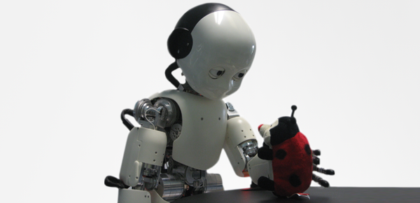

Introduction
This book addresses all the popular beliefs and ideas concerning the creation and development of a social robot. The advancement in the filed of AI has led to the creation of many autonomous robots which are designed to fulfill specific tasks, but the progress in the field of creating a ‘social robot- a robot that think and behave like humans’ is still slow. These human-like robots will learn and adapt from experiences and will be accepted as a companion to human being.
With the boom in the AI industry many companies came up with their version of smart and useful robots. We have seen or heard many such machines which are efficient in performing day to day task, they can vacuum the rug, mow the lawn, dispose of bombs, even perform surgery. Therefore, AI is very useful when designing solutions for individual problems, but it still struggles to create the normal general-purpose intelligence. The machines are capable to perform many tasks with accuracy, but they still do not fit in a human society.
The General-Purpose Robots
Development in the field of deep learning has led to acceleration in robotic technology. And many researchers are now focusing on developing interaction-oriented robots which are designed to communicate with humans. One such popular interactive robot was ‘AIBO’, a robot dog which was marketed as a companion for humans like a real pet and did good commercially. There are many such examples of entertainment robot like ‘Cozmo’ or the cute ‘Kirobo Mini robot’ which responds and communicates with humans using cloud technology. The advantage with all these entertainment robots is that they are designed with the tasks to play and communicate with their owners, which offers a simple simulation of behavior, but they do not think or behave like humans. In order to be social like humans, the robots need to be designed with a broader specification and should be more flexible – like a general-purpose robot.

Steps to grow robot?
1. Groundwork
The author presents the idea to design the social robots, he proposes that to build such robots, researchers need to focus and learn from the development process of humans. Lee describes how a human display intelligence with their behavior and with their ability to adapt to new situations, so exploring this field can address many problems of AI and robotics. With this he also draws attention to the physical anatomy of the robot, with five key elements - autonomy, embodiment, emergence, experience, and sense-making. Autonomy refers to self-control; embodiment means being influenced by one’s physical body; emergence is behavior that occurs through the dynamics of internal and external interactions; experience is the state of a system as a result of the history of its interactions; and sense-making is the ability to learn regularities or contingencies present in the system’s interactions.
2. Development
To understand the mechanism of child development and implement these ideas in robots, the researchers need to explore the human cognitive growth. The infants development displays remarkable progress in the of sensorimotor skills and cognitive abilities, so to achieve human like behavior, the robots should be designed with enactive cognitive interaction with environment and body. The author gives example of a humanoid robot called - ‘iCub’, its development and how the robots is able to learn from its experiences. All these are positive signs to achieving human like intelligence in machine.
Concluding Thoughts
Strong Point
I agree with the author’s idea of the embodiment of AI to achieve human like robots. Also, the focus should not be in perfecting the task driven machines but in achieving the general-purpose AI, which develops a simple robot which can interact, play, learn and fits in the human society. I believe, if we continue our efforts in perfecting the general- purpose AI, we will experience major breakthrough in the field of robotics.
Limitations
The author’s proposal of the study of infant’s growth to develop an intelligent machine is not entirely new. The same idea was proposed by Alan Turing when he suggested to develop a childlike machine and work on educating it by designing a learning process similar to humans. And even if we are able to implement the cognitive abilities of infants in robots, we have miles to go before we build an intelligent adult version of it.